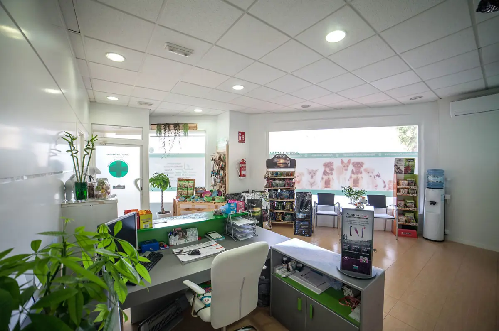

LA PRIMERA IMPRESIÓNUna web a la altura
Una web a la altura
de vuestro cuidado.
Hasta 8 páginas, con vuestros servicios, equipo, instalaciones y contacto. Diseñada para el móvil, con accesos claros para reservar, llamar o escribir.
Ver la web de demostración Se abre la demo independiente. Los asistentes solo se cargan si decides activarlos allí.bienestar animal
Ellos son familia.
Su bienestar,
nuestra vocación.

Cuidamos cada visita ↗